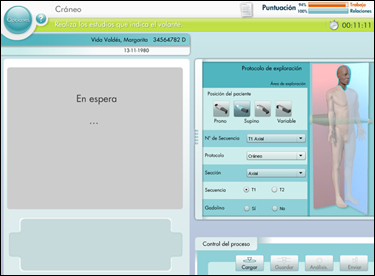

 |
|
El primer paso es la obtención de un estudio básico simple, denominado localizador, ya sea en el plano sagital, axial o coronal.
En función del órgano a estudiar estará más indicado uno u otro plano anatómico inicial.
Sobre ese estudio básico (por ejemplo, cráneo sagital) se deberán señalar las áreas a estudiar de máximo interés o ROI, de las cuales se obtendrán imágenes sectoriales en un eje anatómico basal.
Se seleccionará el tipo de secuencia deseada (T1, T2, Spin Eco, etc) y los planos anatómicos que deseamos obtener.
Si es necesario se comenzará con la introducción de contraste. |